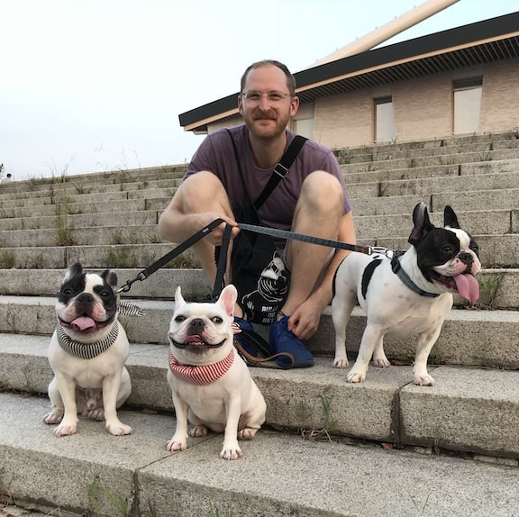

hello! my name is edward bacal
i'm a toronto-based front-end developer, designer, & writer. have a look at some of my work!
ABOUT:
i embrace a holistic approach to web media by thinking ACROSS code, content, ui, and ux. i'm just as passionate about creating beautiful, user-friendly webpages as i am about developing technical solutions for client-facing content.
FUN FACT: I have a phd in art history from the university of toronto and an ma (also in art history) from university college london. art and theory are VERY important me, as are research, analysis, and critical writing. my work and worldview are built on those passions and skills, which is what makes my approach to the web UNIQUE.
otherwise, i enjoy creative hobbies such as illustration, producing music and dj-ing, and various art-adjacent activities. i also like brachycephalic DOGS, bicycles, and cafés.
read more in my resume (or, if you're REALLY curious, my cv)
WEB DEVELOPMENT
- skillset: